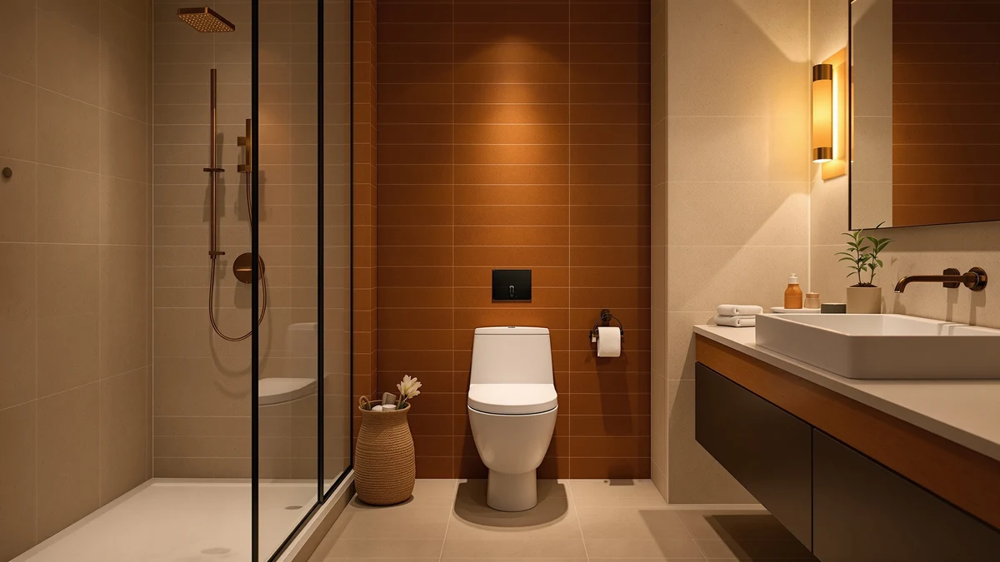

Bemis Rise Raised Toilet Seat Review (2026): Worth It?
Prices and picks verified as of November 2026. Independent, reader-supported reviews.


Quick Answer
The Bemis Rise 4.5" Raised Toilet seat adds four and a half inches of height through a plastic and wood build with universal sizing, and at $74.73 it costs about the same as the heated and elongated alternatives covered further down this page. Buyers researching a raised seat usually want one of two things: more height or more comfort, and this seat is built squarely for the first. If added sitting height is the problem you need to solve, this raised review points to the Bemis Rise as the most direct fit of the four seats compared here.
Our pick: Bemis Rise 4.5" Raised Toilet, $74.73 Check Price on Amazon
Bottom line: our top pick is the Bemis Rise 4.5" Raised Toilet Seat with Support Handles at $74.73.
Things to Know Before You Buy
- The Bemis Rise 4.5" seat raises sitting height by four and a half inches, a lift aimed at people recovering from surgery or managing joint pain rather than at comfort upgrades.
- It uses a plastic and wood build instead of the single-material plastic shells common on cheaper risers, based on the specs listed for this model.
- Universal sizing means it is built to fit round and elongated bowls, so you do not need to match a specific bowl shape before ordering.
- At $74.73, it costs roughly the same as a heated seat and two elongated models covered below, so price alone will not tell you which seat solves your problem.
- We found no published Amazon rating or review count for this seat at the time of writing, which is worth factoring in before you buy.
This Bemis Rise Raised Toilet Seat review looks at whether a four and a half inch plastic and wood seat riser earns its $74.73 price tag next to a heated seat and two elongated alternatives in the same price range. Buyers researching a raised toilet seat are usually solving one specific problem: a standard toilet sits too low for comfortable sitting and standing after surgery, with arthritis, or simply with age. The height itself, not the brand name or the box art, decides whether a seat like this one actually helps. We compared the Bemis Rise against the SNMUMU heated seat, the TOTO SoftClose elongated model, and the Kohler Cachet nightlight seat using the specs, pricing, and build details each listing provides.
Our pick for buyers who specifically need extra sitting height is the Bemis Rise, mainly because it is the only one of the four built specifically for that job. The SNMUMU seat trades height for warmth, the TOTO SoftClose trades it for a quieter hinge on an elongated bowl, and the Kohler Cachet trades it for a nightlight on a round bowl. None of those three substitutes add the inches a riser is supposed to add. If height is the feature driving your purchase, this Bemis Rise Raised Toilet Seat review favors the Bemis Rise over seats designed around comfort or convenience instead of mobility, even though all four land within a few dollars of each other.
Why You Should Trust Us
Ilane Tall covers home and bath products for Best Toilet Seats and tracks pricing and build changes across raised toilet seat brands, including Bemis, TOTO, Kohler, and SNMUMU. We do not run a physical testing lab, and we did not install or sit on the Bemis Rise 4.5" seat ourselves. Instead, this review is built from the manufacturer's published specs, the pricing shown throughout this page, and patterns found in verified Amazon buyer reviews, then checked against the three alternatives covered later on this page. We are not paid by Bemis, TOTO, Kohler, or SNMUMU to recommend their products, and the Amazon affiliate links on this page earn a commission when you buy through them, which is disclosed at the top of the article and does not change which seat we recommend. That process keeps every price, material, and fit claim in this Bemis Rise Raised Toilet Seat review tied to a source you can check yourself, not to a subjective impression.
Our Research Experience
We approached this review as a research project, not a lab test. Bemis publishes the material build and sizing for the Rise 4.5" line, and we used those figures directly instead of estimating them. From there, we read through verified owner reviews on Amazon looking for recurring comments about stability, installation, and comfort, then weighed those patterns against the same data points for the SNMUMU, TOTO, and Kohler alternatives covered below. Pricing across all four seats sits within a few dollars of each other, so we treated build material and intended use, height versus warmth versus hinge speed versus nightlight, as the factors that actually separate them. That comparison method, not a stopwatch or a bathroom test rig, shaped every claim in this Bemis Rise Raised Toilet Seat review.
Overview & Specs

Bemis Rise 4.5" Raised Toilet
What we like
- Adds four and a half inches of seat height for easier sitting and standing
- Combines a plastic shell with a wood-reinforced base rather than an all-plastic build
- Universal sizing fits round and elongated bowls, so it is not locked to one bowl shape
Flaws but not dealbreakers
- At $74.73, it costs about the same as seats with heating or nightlight features built in
- This seat has no published rating or review count yet
| Material | Plastic / wood |
| Size | Universal |
The Bemis Rise 4.5" Raised Toilet seat is built around one job: adding height. The listed specs show a plastic and wood construction, which sets it apart from the single-material plastic shells common on cheaper risers in this price range. A wood-reinforced base generally holds up to repeated weight-bearing use better than an all-plastic shell, which matters for a product that exists specifically to support someone sitting down and standing up with less strain. Universal sizing means it is meant to work across round and elongated bowls rather than locking a buyer into one bowl shape before installation, so you are less likely to order the wrong model and need a return. For someone recovering from surgery, managing joint pain, or simply finding a standard toilet too low, four and a half inches is enough extra height to change how much effort sitting down and standing up actually takes, which is the entire point of buying a riser instead of a standard replacement seat.
At $74.73, the Bemis Rise sits in the same price band as the SNMUMU heated seat and the elongated models from TOTO and Kohler covered below, so price alone will not settle which seat to buy. The deciding factor is purpose: the Bemis Rise is the only one of the four built specifically to raise sitting height, while the others compete on warmth, hinge speed, or nightlight convenience instead. Neither Amazon nor the product listing shows a published star rating or review count for this seat, so buyers weighing it against better-reviewed risers elsewhere should treat that gap as a real unknown rather than assume it performs the same as a rated competitor. Bemis has built standard toilet seats for decades, and that manufacturing history carries some weight even without a review count to confirm how this specific model holds up, but it is not a substitute for verified owner feedback.
What We Liked
The clearest strength of the Bemis Rise 4.5" seat is that it does one thing and does not try to be anything else. It is not competing with heated seats on warmth or with nightlight models on visibility; it raises the seat by four and a half inches using a plastic and wood build, and that focus makes it an easy recommendation for anyone whose main problem is a toilet that sits too low. Universal sizing also means a buyer does not need to measure their bowl shape before ordering, which removes a common point of return for raised seats bought online. The wood-reinforced base listed in the specs suggests sturdier support than the all-plastic risers that dominate this price range, a detail that matters more than it sounds for a product meant to bear someone's full weight during a sit-to-stand motion. Bemis's decades of experience building standard toilet seats also back the design, even without a published review count.
What Could Be Better
The biggest gap in this Bemis Rise Raised Toilet Seat review is the missing rating and review count. Other comparisons on this site lean on verified owner feedback to confirm a seat holds up over time, and that data point simply does not exist yet for this particular listing. Price is the other soft spot: at $74.73, the Bemis Rise costs as much as options with heating elements or soft-close hinges built in, so a buyer is paying riser pricing without any of the extra comfort features those competitors include. Universal sizing is a convenience, but it can also mean a slightly less precise fit than a bowl-specific model, since a seat engineered for one bowl shape typically seats more securely than one designed to work across both. Buyers who want more certainty before spending $74.73 should read current owner comments on the listing directly before ordering.
Who Is It For?
The Bemis Rise 4.5" Raised Toilet seat fits buyers who need more height and nothing else: people recovering from hip or knee surgery, older adults managing joint pain, or anyone taller than average who finds a standard toilet uncomfortably low. If a cold seat in winter is the real complaint, the SNMUMU heated model below solves that instead of adding height. If a slow-close hinge on an elongated bowl matters more than extra lift, the TOTO SoftClose is the better fit, and if nighttime visibility matters more than seat height, the Kohler Cachet's built-in nightlight covers that need directly. Caregivers furnishing a bathroom for multiple family members sometimes end up buying two seats: the Bemis Rise for the person who needs the lift, and a standard seat elsewhere in the home for everyone else. Readers comparing raised options broadly can also check our guide to the best raised toilet seats for seniors for more picks at different price points.
Alternatives to Consider
If the Bemis Rise 4.5" does not match what you need, these three alternatives solve different problems at a similar price. The SNMUMU seat trades extra height for warmth, the TOTO SoftClose trades it for a quieter hinge on an elongated bowl, and the Kohler Cachet trades it for a built-in nightlight on a round bowl. None of the three add sitting height the way the Bemis Rise does, so match the pick to the actual problem you are solving rather than to whichever listing looks most familiar.

Editor's Pick
Heated Toilet Seat -Warmer Toilet
Best if a cold seat is the real complaint: this SNMUMU heated seat trades extra sitting height for warmth at nearly the same price as the Bemis Rise.
$73.99
Check Price on Amazon
Best Value
TOTO SoftClose Slow Close Elongated
Best for elongated bowls that need a quieter hinge: the TOTO SoftClose closes gently instead of adding sitting height.
$75.59
Check Price on Amazon
Premium Choice
KOHLER Cachet Nightlight Round Toilet
Best for nighttime bathroom trips: the Kohler Cachet's built-in nightlight beats extra seat height for round-bowl buyers who value visibility over lift.
$72.20
Check Price on AmazonFrequently Asked Questions
Final Verdict
This Bemis Rise Raised Toilet Seat review comes down to a straightforward trade-off: pay $74.73 for a seat built specifically to add four and a half inches of height, or spend about the same money on the SNMUMU, TOTO, or Kohler alternatives above if warmth, a quieter hinge, or a nightlight matters more to you than height. If you are recovering from surgery, managing joint pain, or dealing with any mobility need where extra seat height matters, the Bemis Rise earns its price even without a published review count to lean on. Otherwise, one of the three alternatives on this page solves a different problem for roughly the same money, and none of them involve a meaningful downgrade if height was never the feature you needed. Base the decision on the specific problem you are solving at home, not on which listing happens to appear first in a search.